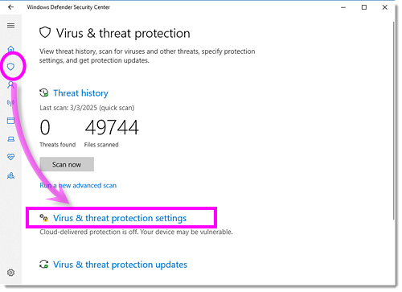
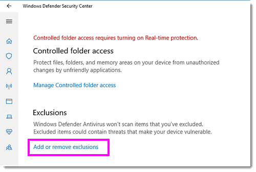
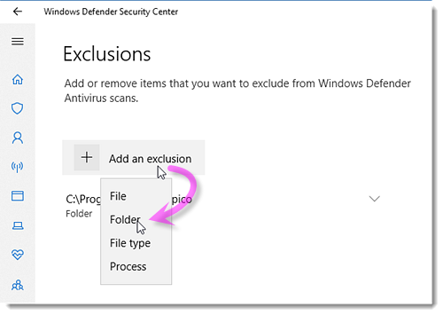

FAQ-1213 Der Origin-Prozess läuft nach dem Schließen von Origin weiter. Was soll ich tun?
Origin-Process-Remain-After-Exit
Letztes Update: 04.03.2025
Wenn Ihr Origin lange Zeit braucht, um zu schließen, oder die Origin-Instanz auch nach dem Schließen noch immer im Hintergrund ausgeführt wird (dies können Sie über den Task Manager feststellen), versuchen Sie bitte Folgendes:
- Öffnen Sie Windows-Sicherheit, indem Sie im Start-Menü von Windows nach "Windows-Sicherheit" suchen, um den Dialog Windows-Sicherheit zu öffnen, oder indem Sie im Start-Menü > Einstellungen > Datenschutz und Sicherheit > Windows-Sicherheit auswählen.
- Wählen Sie Viren- und Bedrohungsschutz.

- Klicken Sie auf Vieren- und Bedrohungsschutzeinstellungen und scrollen Sie hinunter, um auf Ausschlüsse hinzufügen oder entfernen in der Gruppe Ausschlüsse zu klicken.

- Klicken Sie auf Ausschluss hinzufügen und wählen Sie Ordner im Ausklappmenü, um die folgenden Ordner (EXE und UFF etc.) jeweils als Ausnahme hinzuzufügen.
C:\Program Files\OriginLab //EXE path, may change based on where user installs C:\ProgramData\OriginLab //fixed path C:\Users\{YourAccountName}\Documents\OriginLab //UFF path, may change based on where user specifies C:\Users\{YourAccountName}\AppData\Local\OriginLab //relatively fixed path
Hinweis: Sie können den Pfad über das Origin-Menü Einstellungen: Optionen > Reiter Systempfad nachprüfen.

- Starten Sie Origin und schließen Sie es dann, um sicherzustellen, dass der Origin-Prozess schneller geschlossen wird als das Kein-Ausschluss-Szenario.
Schlüsselwörter:Windows-Sicherheit, im Hintergrund laufen, schließen, beenden, langsam, lange Zeit